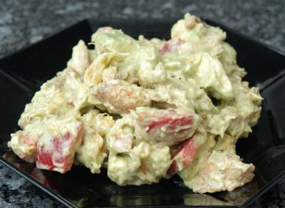

| Zutaten für 4 Personen: | |
| 1,5 kg | Suppenhuhn |
| 1 | Peperoni |
| 1 | Orange |
| 1 | Avocado |
| Salz | |
| 1 dl | Mayonnaise |
| 6 EL | Limes |
| Kopfsalatblätter | |
| 30 g | Mandeln, gehobelt |
Aufgetautes Suppenhuhn ca. 90 Minuten in Salzwasser ziehen lassen und dann im Sud erkalten lassen. Haut und Knochen entfernen; Fleisch in 2 - 3 cm grosse Stücke schneiden.
Sauce:
Saft der Limes mit dem Salz und der Mayonnaise verrühren.
Peperoni waschen, entkernen und in 1 cm grosse Würfel schneiden.
Orange waschen und in hautlose Schnitze schneiden.
Avocado waschen, schälen und in dünne Scheibchen schneiden. Nun alle Zutaten sofort mit der Sauce vermischen (Avocados oxidieren rasch).
Salat 30 Minuten marinieren lassen.
Kopfsalat rüsten (Blätter ganz lassen) und waschen. Salat auf die Blätter anrichten und mit den gehobelten Mandeln bestreuen.
Im Dampftopf rechnen wir für das Huhn mit 45 Minuten Kochzeit
Herbert Eigenmann, Code: AVÜ
Schmeckt eigentlich ganz OK. Mir war die Orange zu aufdringlich. Das Rezept verlangt nach erheblich mehr Hühnerfleisch als ich verwendete. Ich habe die Sauce für 4 gemacht und Fleisch für 1. RE, 11.3.2008
@LINKBACK_TAG@ @WAKELOCK@